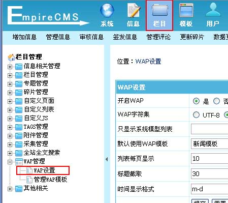
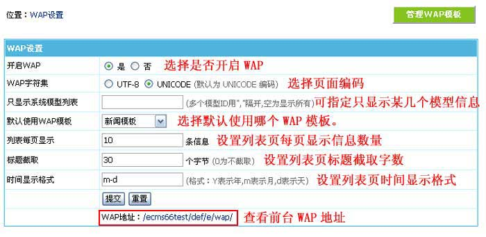
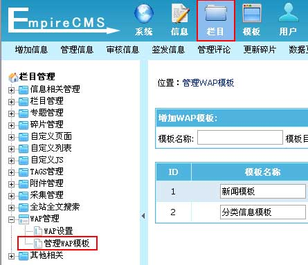
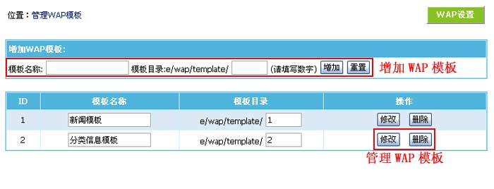
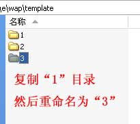
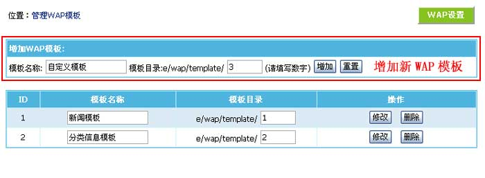
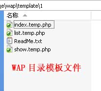

| 本功能为对前台WAP手机浏览模块进行管理。 |
|
||
| 一、增加WAP模板步骤说明： |
| 1、先制作好WAP模板文件（/e/wap/template/）； 2、登录后台管理WAP模板里增加刚才做好的WAP模板目录； 3、WAP设置里选择新WAP模板测试； 4、完成。 |
| 二、WAP设置： | ||||||||||||||
| 1、登录后台，单击“栏目”菜单，选择“WAP设置”子菜单，进入WAP设置界面： | ||||||||||||||
|  | ||||||||||||||
| 2、进入WAP设置界面： | ||||||||||||||
|  | ||||||||||||||
|
| 三、管理WAP模板： |
| 1、登录后台，单击“栏目”菜单，选择“管理WAP模板”子菜单，进入管理WAP模板界面： |
|  |
| 2、进入管理WAP模板界面： |
|  |
| 四、增加WAP模板： | ||||
| 1、先复制/e/wap/template目录下的默认WAP模板目录，比如复制默认“新闻模板”，然后目录名称用“3”，接着修改模板文件（目录名要用数字）： | ||||
|  | ||||
| 2、WAP模板文件制作好后，管录后台进入栏目 -> 管理WAP模板 -> 增加WAP模板，进入增加页面： | ||||
|  | ||||
|
||||
| 3、后台栏目 -> WAP设置 -> 选择默认使用WAP模板。选择我们增加的WAP模板，然后访问/e/wap/就能看到效果。 | ||||
| 4、增加WAP模板完成。 |
| 五、后台界面目录的文件说明： | ||||||||
|  | ||||||||
|
||||||||
| （也可依自己需求增加减少模板文件。） |
| 六、WAP模板技巧说明： |
| 1、如果在模板中指定要使用的WAP模板？ 答：页面链接加上 style=WAP模板ID 即可，如：/e/wap/?style=3 |
| 2、如何给WAP指定访问域名？ 答：将域名直接绑定到 /e/wap 目录即可，绑定后访问直接用绑定的域名。 |
| 相关链接： |
| 1、帝国网站管理系统之WAP手机浏览功能 |